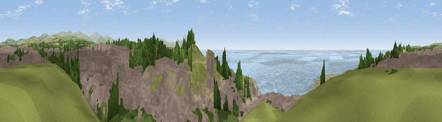

Viewpoint near Seascale
#9994 in England · top 56% of its area beats it · near SeascaleThe view, rendered

A 360° render of this exact spot computed from the terrain model, tree cover and land cover — summer colours, afternoon light, calibrated against photographs of famous viewpoints. Real trees, hedges and buildings will differ in detail.
The panorama
Grey silhouette: terrain skyline in each direction (720 bearings, Earth curvature and refraction included). Dashed green: skyline with trees (+15 m) and buildings (+8 m) as obstacles. Blue strip: how far the ground is visible on each bearing.
Where the view opens
Wedge length = distance to the farthest visible ground on that bearing (vegetation-aware). Rings at 10, 25 and 50 km.
What fills the view
53% built-up · 18% water · 17% grassland · 6% bare ground · 6% woodland ·
Angular shares of the visible panorama (visual magnitude), not map area. Landscape diversity 0.56 (0–1 Shannon).
Key numbers
More beautiful places nearby
The staircase of upgrades: each row has a higher view potential than everything closer. Driving times are estimates from straight-line distance, calibrated against real road routing — check an actual route before setting out.
| Place | Direction | Drive | Score |
|---|---|---|---|
| Viewpoint near Seascale | SSE · 0 km | ~1 min | 67.4 |
| Viewpoint near Gosforth | ENE · 5 km | ~12 min | 72.0 |
| Viewpoint near Gosforth | ENE · 6 km | ~12 min | 76.3 |
| Viewpoint near Gosforth | NE · 7 km | ~14 min | 83.0 |
| Hooker Crag | ESE · 10 km | ~19 min | 84.8 |
| Viewpoint near Cleator | N · 10 km | ~20 min | 86.1 |
| Whin Rigg | E · 12 km | ~23 min | 87.5 |
| Crag Fell | NNE · 14 km | ~25 min | 89.1 |
54.41196, -3.50266 · source: screening · position refined by local search. Computed location — check access rights before visiting.